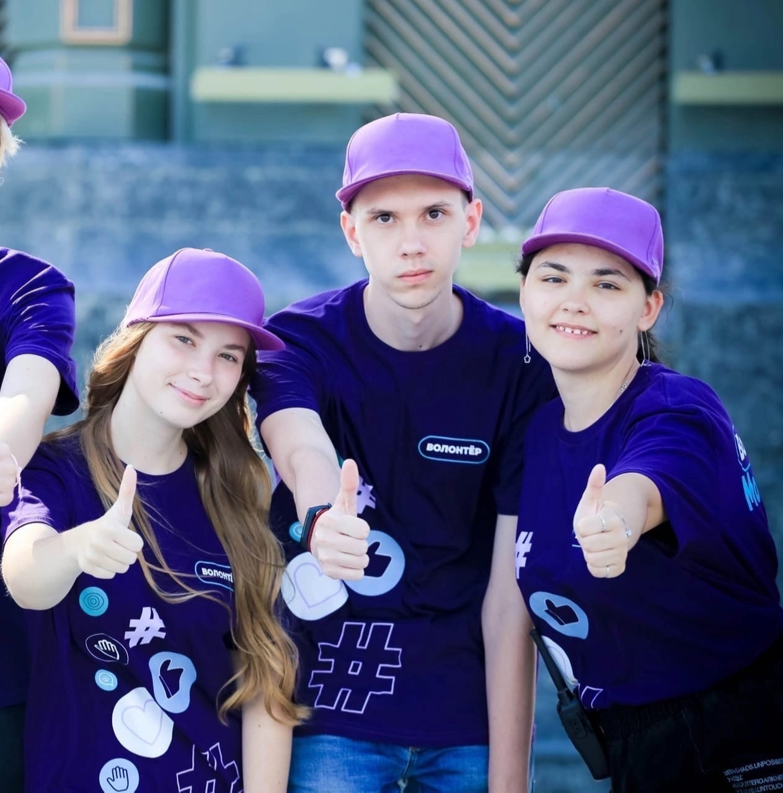

🌟 Интерактивная карта доступности для людей с ОВЗ
Наша миссия: Создать удобный сервис для связи людей с ограниченными возможностями здоровья и волонтёров через онлайн-карту.
🔹 Ключевые возможности:
- 📍 Заявки на помощь — люди с ОВЗ отмечают свои потребности на карте.
- 🏃 Быстрый отклик — волонтёры видят запросы рядом и могут помочь.
- 🤝 Партнёрство — сотрудничество с организацией «МосВолонтёр».
- 🎓 Студенческий проект — разработан в Московском Политехническом университете.
